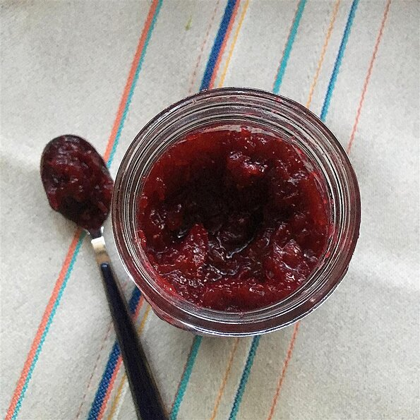

Spiced Cranberry Jam

Description
I needed to fill some holiday cookies with jam and since raspberries and apricots weren't in season, I opted to use
cranberries. This jam is lightly sweetened, fragrant, and has a beautiful color that complemented the cookies perfectly!
Ingredients
- 1 (12 ounce) bag fresh cranberries
- ¾ cup white sugar
- ½ cup turbinado sugar
- ¼ cup water
- 1 orange, zested
- 1 teaspoon ground cinnamon
- 1 teaspoon ground ginger
- ¼ teaspoon ground cloves
- ¼ teaspoon ground allspice
- 1 dash ground black pepper
Steps
- Combine cranberries, white sugar, turbinado sugar, water, orange zest, cinnamon, ginger, cloves, allspice, and pepper in
a large pot over medium heat. Simmer, stirring frequently, until sugar dissolves and cranberries pop, 10 to 12 minutes.
- Blend cranberry jam into desired consistency using an immersion blender.
- Pour jam into a glass pint jar; cool until thickened and set, about 1 hour. Seal jar and refrigerate.
Return home